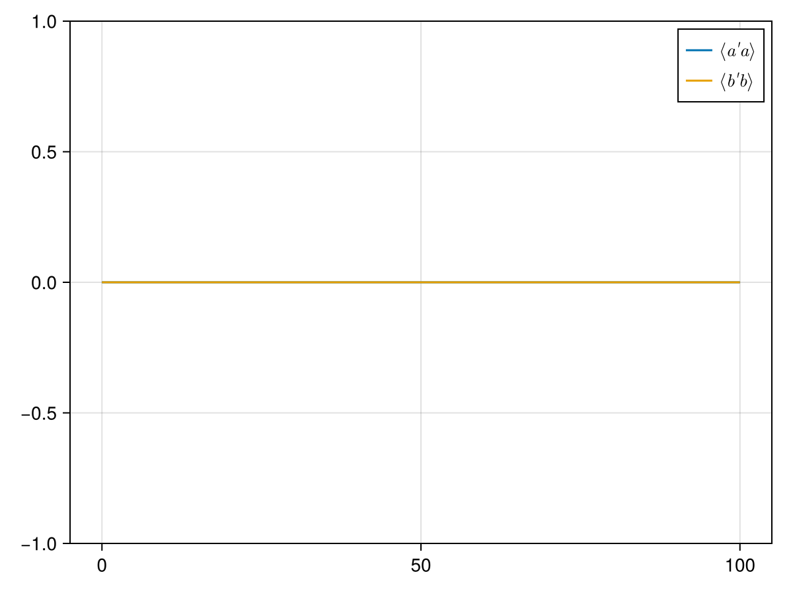
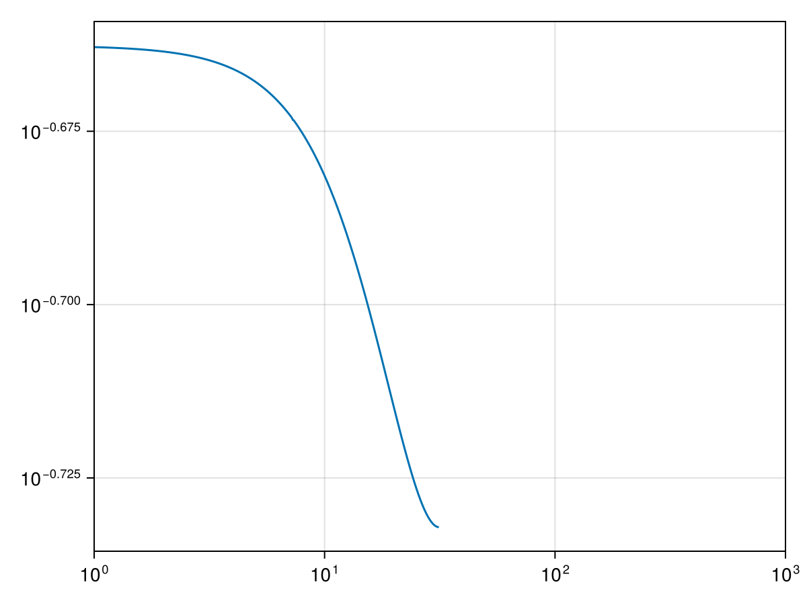

using QuantumToolbox
N = 4
a = destroy(N) ⊗ qeye(N)
b = qeye(N) ⊗ destroy(N)
H1 = QobjEvo(b'*b, (p,t)->p[1])
H2 = QobjEvo(a'*b+a*b', (p,t)->p[2])
H = H1+H2
L = [QobjEvo(a, (p,t)->p[3])]
tlist = LinRange(0, 100, 1000)
p0 = [0.01,500,10]
ψ0= basis(N,0) ⊗ basis(N,0)
eops = [a, a'*a,b,b'*b]
sol = mesolve(H, ψ0, tlist, L;params = p0,e_ops=eops)
Progress: [ ] 0.1% --- Elapsed Time: 0h 00m 01s (ETA: 0h 16m 39s)
Progress: [==============================] 100.0% --- Elapsed Time: 0h 00m 01s (ETA: 0h 00m 00s)
using CairoMakie
fig = Figure()
ax = Axis(fig[1,1])
lines!(ax,tlist,real(sol.expect[2,:]),label = L"$\langle a' a \rangle$" )
lines!(ax,tlist,real(sol.expect[4,:]),label = L"$\langle b' b \rangle$" )
axislegend()
fig
corr = correlation_2op_1t(H,ψ0,tlist,L,a,a';params = p0)
1000-element Vector{ComplexF64}:
1.0 + 0.0im
0.07986001624328848 - 3.9731316894605794e-5im
0.005871377381967757 - 5.749753367751837e-6im
0.000389245361000245 - 5.593764189857812e-7im
2.2116862388556264e-5 - 4.0749424362485466e-8im
1.0929703570931246e-6 - 2.293473585107393e-9im
6.812087915789466e-8 - 6.770189850933705e-11im
-2.533835944059366e-7 + 1.0321212067398758e-9im
-5.106403660917553e-7 + 2.0401422310365902e-9im
-4.978981335651292e-7 + 1.952672906410565e-9im
⋮
-4.790136117811723e-7 + 1.6412493581626611e-7im
-2.5007463873329194e-7 + 1.515140236210815e-8im
1.0735832232270663e-7 - 1.421256500544251e-7im
4.0972120270070865e-7 - 2.2693727416246074e-7im
5.034287868057011e-7 - 1.9611995913347698e-7im
3.398965343398423e-7 - 6.468086137762786e-8im
1.7135245399957436e-9 + 1.0049944587187889e-7im
-3.3720744357290024e-7 + 2.1446060724246557e-7im
-4.857387278038006e-7 + 2.138510026070482e-7im
(omega, S) = spectrum_correlation_fft(tlist,corr)
fig = Figure()
ax = Axis(fig[1,1],xscale = log10, yscale = log10)
nz = Int(ceil(length(omega)/2+1))
lines!(ax, omega[nz:end],S[nz:end])
fig
